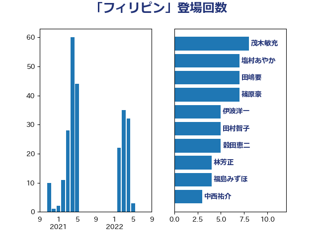

単語「フィリピン」

| 茂木敏充 | 自由民主党 | 8 回 |
| 塩村あやか | 立憲民主党 | 7 回 |
| 田嶋要 | 立憲民主党 | 7 回 |
| 篠原豪 | 立憲民主党 | 7 回 |
| 伊波洋一 | 無所属 | 5 回 |
| 田村智子 | 日本共産党 | 5 回 |
| 穀田恵二 | 日本共産党 | 5 回 |
| 林芳正 | 自由民主党 | 4 回 |
| 福島みずほ | 社会民主党 | 4 回 |
| 中西祐介 | 自由民主党 | 3 回 |
| 中谷真一 | 自由民主党 | 3 回 |
| 吉田はるみ | 立憲民主党 | 3 回 |
| 吉良州司 | 無所属 | 3 回 |
| 川田龍平 | 立憲民主党 | 3 回 |
| 渡辺周 | 立憲民主党 | 3 回 |
| 和田有一朗 | 日本維新の会 | 2 回 |
| 山田宏 | 自由民主党 | 2 回 |
| 岡田克也 | 立憲民主党 | 2 回 |
| 岸真紀子 | 立憲民主党 | 2 回 |
| 後藤茂之 | 自由民主党 | 2 回 |
| 日下正喜 | 公明党 | 2 回 |
| 有村治子 | 自由民主党 | 2 回 |
| 末松信介 | 自由民主党 | 2 回 |
| 松沢成文 | 日本維新の会 | 2 回 |
| 江田憲司 | 立憲民主党 | 2 回 |
| 須藤元気 | 無所属 | 2 回 |
| 高良鉄美 | 無所属 | 2 回 |
| こやり隆史 | 自由民主党 | 1 回 |
| ながえ孝子 | 無所属 | 1 回 |
| 上田清司 | 国民民主党 | 1 回 |
| 中川康洋 | 公明党 | 1 回 |
| 井上哲士 | 日本共産党 | 1 回 |
| 伊藤孝江 | 公明党 | 1 回 |
| 加藤勝信 | 自由民主党 | 1 回 |
| 北神圭朗 | 無所属 | 1 回 |
| 古川俊治 | 自由民主党 | 1 回 |
| 古川禎久 | 自由民主党 | 1 回 |
| 国光あやの | 自由民主党 | 1 回 |
| 塩田博昭 | 公明党 | 1 回 |
| 宮本徹 | 日本共産党 | 1 回 |
| 小沼巧 | 立憲民主党 | 1 回 |
| 小西洋之 | 立憲民主党 | 1 回 |
| 岸信夫 | 自由民主党 | 1 回 |
| 掘井健智 | 日本維新の会 | 1 回 |
| 本田太郎 | 自由民主党 | 1 回 |
| 杉本和巳 | 日本維新の会 | 1 回 |
| 松原仁 | 立憲民主党 | 1 回 |
| 松野博一 | 自由民主党 | 1 回 |
| 柴田巧 | 日本維新の会 | 1 回 |
| 梅村聡 | 日本維新の会 | 1 回 |
| 熊野正士 | 公明党 | 1 回 |
| 玄葉光一郎 | 立憲民主党 | 1 回 |
| 田村憲久 | 自由民主党 | 1 回 |
| 菅義偉 | 自由民主党 | 1 回 |
| 藤田文武 | 日本維新の会 | 1 回 |
| 西銘恒三郎 | 自由民主党 | 1 回 |
| 谷田川元 | 立憲民主党 | 1 回 |
| 野田聖子 | 自由民主党 | 1 回 |
| 長坂康正 | 自由民主党 | 1 回 |
| 鬼木誠 | 立憲民主党 | 1 回 |